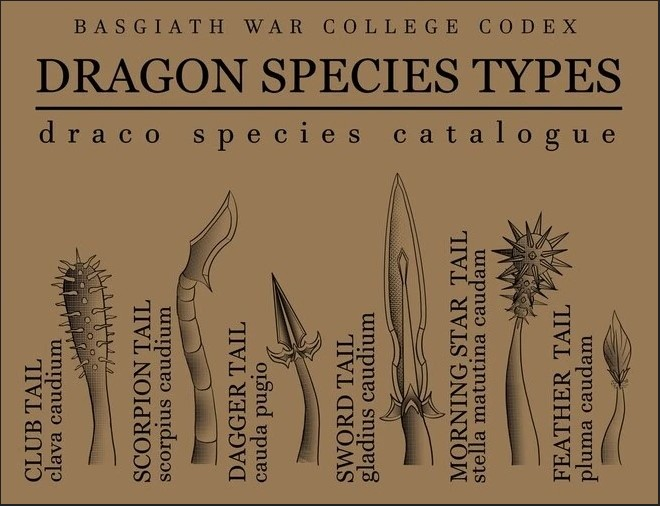

Dragon Guide
Dens
- Black: Rarest type of dragonkind, good planners, smart & cunning
- Blue: Known for their large sizes, Blue + Daggertail Combo = Rarest and deadliest, run
- Green: Known for intellect and siege strategies, Never back down from a Green (lower head and wait for their approval)
- Brown: Can sense wards on lands, never show fear to a Brown
- Orange: Comes in various shades from carrot to apricot, unpredictable, From Northern Esbens
- Red: Most violent dragon, approach from the front left if possible, born along limestone cliffs
Tail Types

This image was sourced from Pixel Pink Girl on the fan wiki page.
Orientation Homework Readings